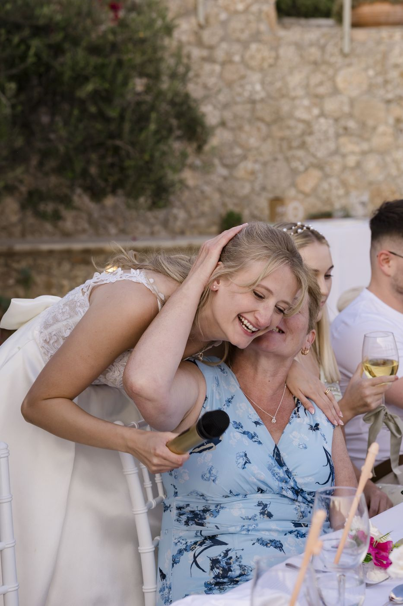
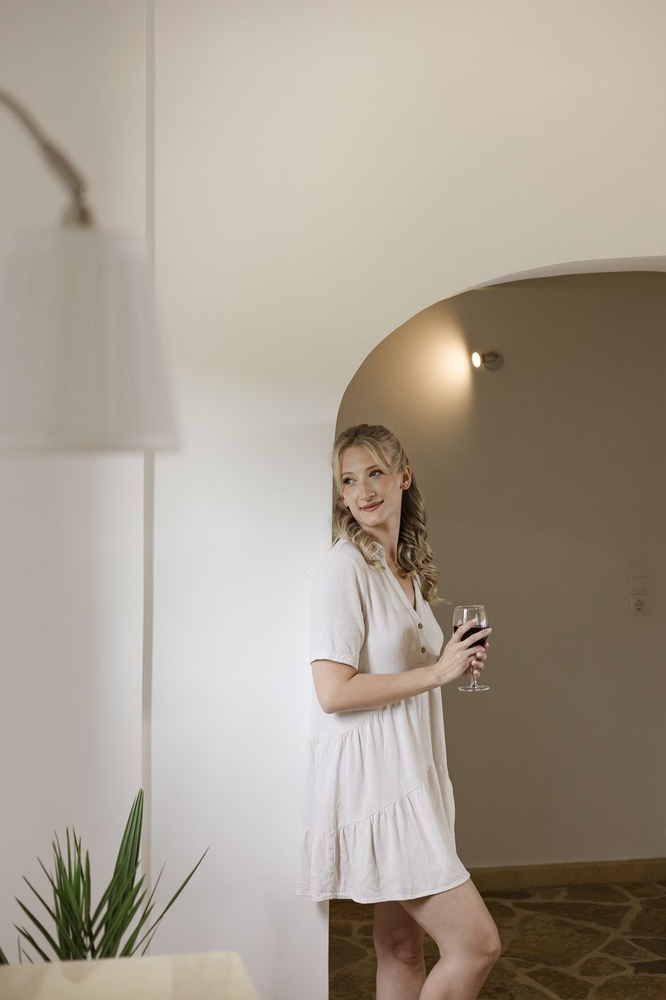
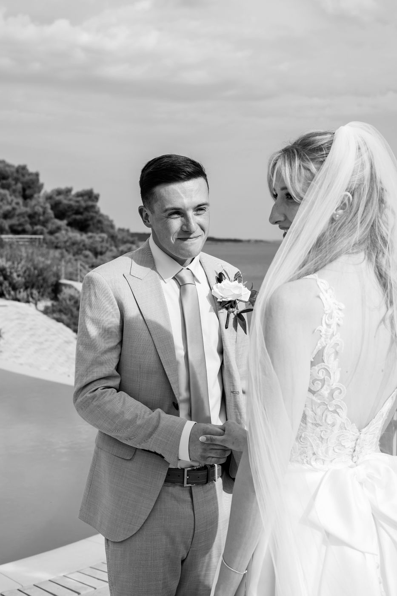
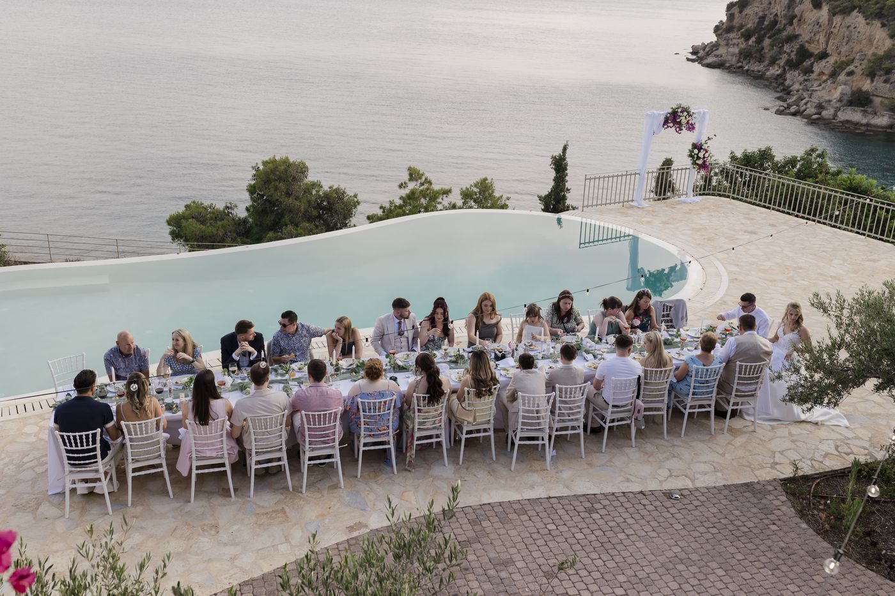
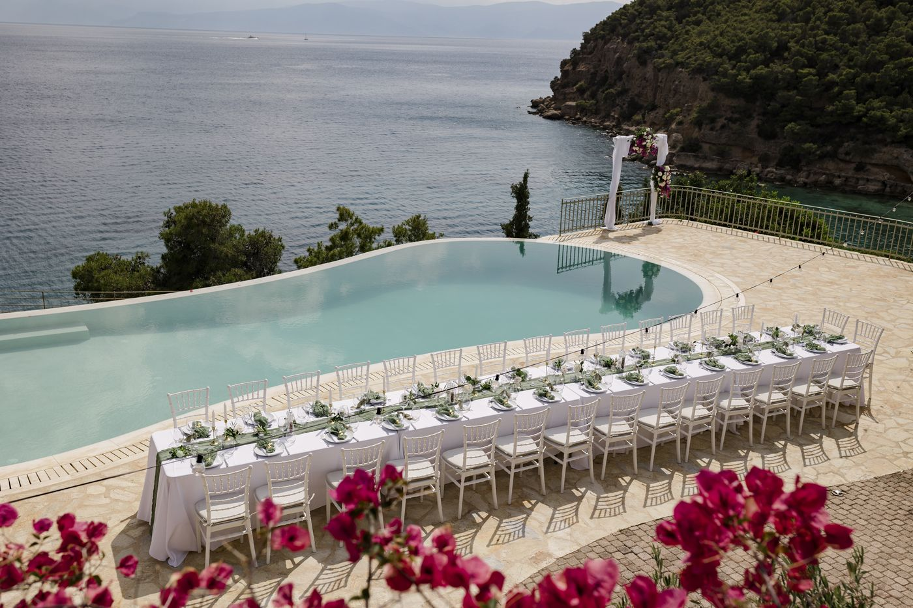
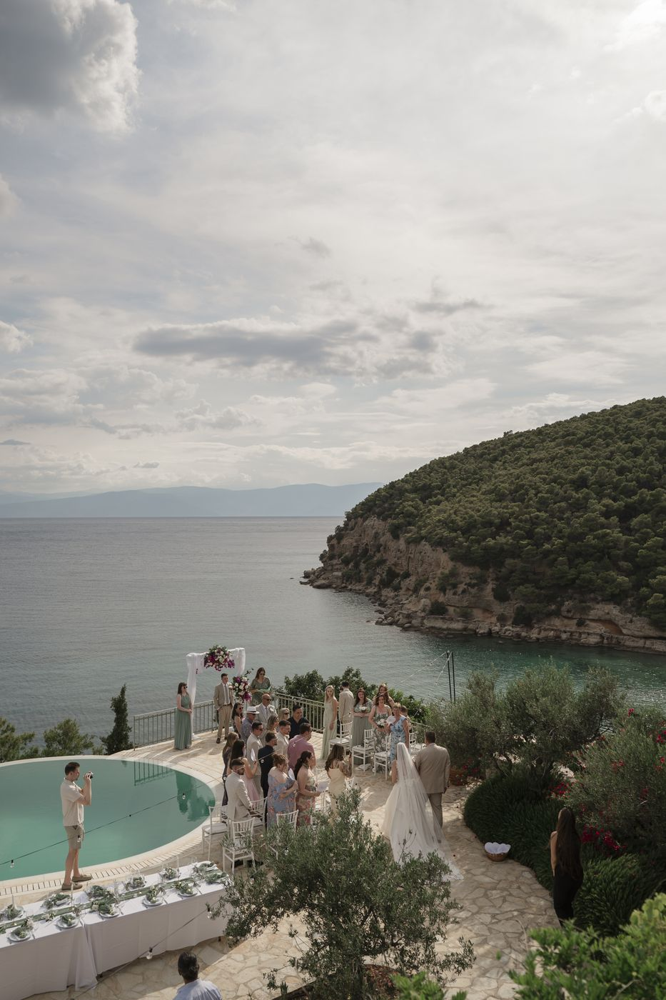
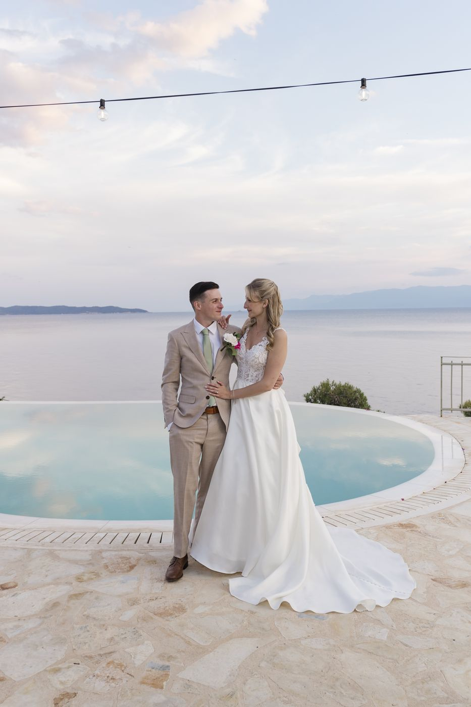

The Journal
Planning guides, cost breakdowns and thinking pieces on intimate and meaningful weddings.

London & Registry · Planning Advice
From booking notices to realistic costs and finding a photographer who understands small weddings. The honest guide to a London civil ceremony with guests.
Read
Intimate Weddings
The honest questions to ask before you decide. Not just about budget or logistics, but about what you and your partner actually want.
Read
Intimate Weddings · Planning Advice
Guest list, venue, suppliers, and the shape of the day. A practical sequence for couples planning a genuinely small UK wedding.
Read
Budget & Costs
Real cost breakdowns for UK intimate weddings in 2026. Where the money goes, where you can save, and what not to skimp on.
Read
Destination Weddings
Legal options, island choice, logistics and costs for UK couples planning a wedding in Greece. Practical guidance, not Pinterest inspiration.
Read
Day Coordination
An honest look at what on-the-day coordination actually involves, who genuinely benefits and when you can probably manage without.
Read